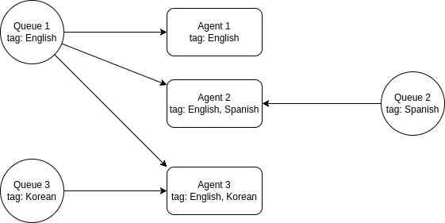

Overview
Call queueing allows calls to be placed on hold without handling the actual inquiries or transferring callers to the desired party. While in the call queue, the caller is played pre-recorded music or messages. Call queues are often used in call centers when there are not enough staff to handle a large number of calls. Call center operators generally receive information about the number of callers in the call queue and the duration of the waiting time. This allows them to respond flexibly to peak demand by deploying extra call center staff.
With the VoIPBIN’s queueing feature, businesses and call centers can effectively manage inbound calls, provide a smooth waiting experience for callers, and ensure that calls are efficiently distributed to available agents, improving overall customer service and call center performance.
The purpose of call queueing
Call queueing is intended to prevent callers from being turned away in the case of insufficient staff capacity. The purpose of the pre-recorded music or messages is to shorten the subjective waiting time. At the same time, call queues can be used for advertising products or services. As soon as the call can be dealt with, the caller is automatically transferred from the call queue to the member of staff responsible. If customer or contract data has to be requested in several stages, multiple downstream call queues can be used.
Flow Execution
A call placed in the queue will progress through the queue’s waiting actions, continuing through pre-defined steps until an available agent is located. These waiting actions may involve playing pre-recorded music, messages, or custom actions, enhancing the caller’s experience while awaiting assistance in the queue.

Agent searching
While the call is in the queue, the queue will be searching for available agents to handle the call. Each valid queue has tags associated with it. The queue will search for agents with the same tags as the valid status.
The agent status, such as available, unavailable, or busy, will be taken into account when searching for available agents. Once an available agent is found, the call will be routed to that agent for further handling, and the waiting actions will cease. This process ensures that calls are efficiently handled by available agents in the call center. The agent searching mechanism enhances call center productivity and customer satisfaction by reducing wait times and optimizing resource allocation.